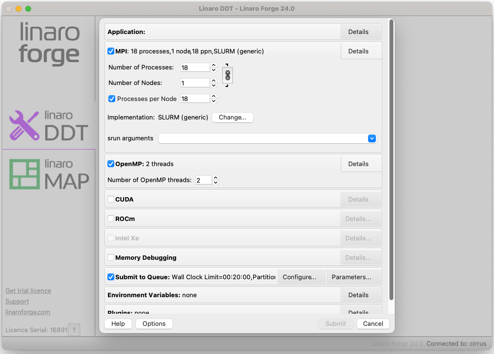
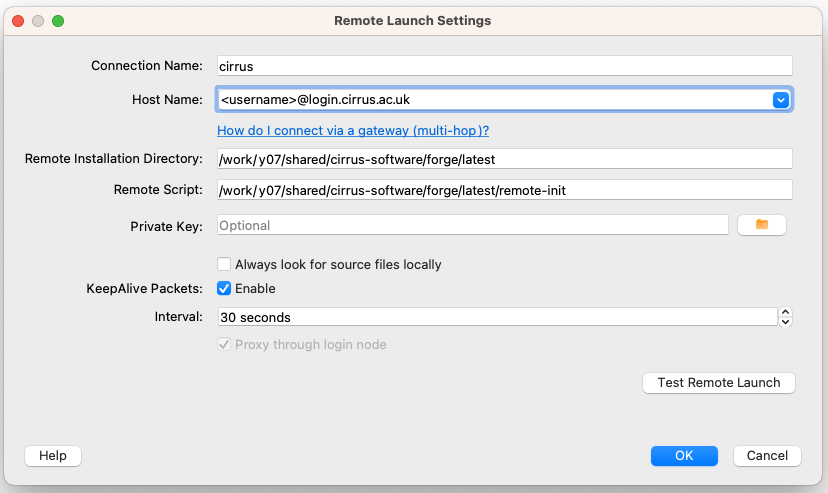

Linaro Forge
Linaro Forge
Linaro Forge provides debugging and profiling tools for MPI parallel applications, and OpenMP or pthreads multi-threaded applications (and also hydrid MPI/OpenMP). Debugging is also possible for CUDA applications on the GPU nodes. Forge DDT is the debugger and MAP is the profiler.
User interface
There are two ways of running the Forge user interface. If you have a good internet connection to Cirrus, the GUI can be run on the front-end (with an X-connection). Alternatively, one can download a copy of the Forge remote client to your laptop or desktop, and run it locally. The remote client should be used if at all possible.
To download the remote client, see the Forge download pages. Version 24.0 is known to work at the time of writing. A section further down this page explains how to use the remote client, see Connecting with the remote client.
One time set-up for using Forge
A preliminary step is required to set up the necessary
Forge configuration files that allow DDT and MAP to initialise its
environment correctly so that it can, for example, interact with
the Slurm queue system. These steps should be performed in the /work
file system on Cirrus.
It is recommended that these commands are performed in the top-level work
file system directory for the user account, i.e., ${HOME/home/work}.
module load forge
cd ${HOME/home/work}
source ${FORGE_DIR}/config-init
Running the source command will create a directory ${HOME/home/work}/.forge that contains the
following files.
system.config user.config
Warning
The config-init script may output, Warning: failed to read system config.
Please ignore as subsequent messages should indicate that the new configuration
files have been created.
Within the system.config file you should find that shared directory is set to the equivalent of ${HOME/home/work/.forge}.
That directory will also store other relevant files when Forge is run.
Using DDT
DDT (Distributed Debugging Tool) provides an easy-to-use graphical interface for source-level debugging of compiled C/C++ or Fortran codes. It can be used for non-interactive debugging, and there is also some limited support for python debugging.
Preparation
To prepare your program for debugging, compile and link in the normal way
but remember to include the -g compiler option to retain symbolic
information in the executable. For some programs, it may be necessary
to reduce the optimisation to -O0 to obtain full and consistent
information. However, this in itself can change the behaviour of bugs,
so some experimentation may be necessary.
Post-mortem, or offline, debugging
A non-interactive method of debugging is available which allows information to be obtained on the state of the execution at the point of failure in a batch job.
Such a job can be submitted to the batch system in the usual way. The relevant command to start the executable is as follows.
# ... Slurm batch commands as usual ...
module load forge
export OMP_NUM_THREADS=6
export OMP_PLACES=cores
ddt --verbose --offline --mpi=slurm --np 6 \
--mem-debug=fast --check-bounds=before \
./my_executable
The parallel launch is delegated to ddt and the --mpi=slurm option
indicates to ddt that the relevant queue system is Slurm
(there is no explicit srun). It will also be
necessary to state explicitly to ddt the number of processes
required (here --np 6). For other options see, e.g., ddt --help.
Note that higher levels of memory debugging can result in extremely
slow execution. The example given above uses the default
--mem-debug=fast which should be a reasonable first choice.
Execution will produce a .html format report which can be used
to examine the state of execution at the point of failure.
Memory debugging
If you are dynamically linking your code and debugging it on the login
node then this is fine (just ensure that the Preload the memory
debugging library option is ticked in the Details pane.) If you are
dynamically linking but intending to debug running on the compute nodes,
or statically linking then you need to include the compile option
-Wl,--allow-multiple-definition and explicitly link your executable
with Forge's memory debugging library. The exactly library to link
against depends on your code; -ldmalloc (for no threading with C),
-ldmallocth (for threading with C), -ldmallocxx (for no threading
with C++) or -ldmallocthcxx (for threading with C++). The library
locations are all set up when the forge module is loaded so these
libraries should be found without further arguments.
Interactive debugging: using the client to submit a batch job
You can also start the client interactively (for details of remote launch, see Connecting with the remote client).
module load forge
ddt
This should start a window as shown below. Click on the DDT panel on the left, and then on the Run and debug a program option. This will bring up the Run dialogue as shown.
Note:
-
One can start either DDT or MAP by clicking the appropriate panel on the left-hand side;
-
If the license has connected successfully, a serial number will be shown in small text at the lower left (see image below). One can click on the question mark icon next to the license serial number to see current information on the status of the license (number of processes available and so on).

In the Application sub panel of the Run dialog box, details of the executable, command line arguments or data files, the working directory and so on should be entered.
Click the MPI checkbox and specify the MPI implementation. This is done by clicking the Details button and then the Change button. Choose the SLURM (generic) implementation from the drop-down menu and click OK. You can then specify the required number of nodes/processes and so on.
Click the OpenMP checkbox and select the relevant number of threads (if there is no OpenMP in the application itself, select 1 thread).
Click the Submit to Queue checkbox and then the associated Configure
button. A new set of options will appear such as Submission template file,
where you can enter ${FORGE_DIR}/templates/cirrus.qtf and click OK.
This template file provides many of the options required for a standard batch job.
You will then need to click on the Queue Parameters button in the same
section and specify the relevant project budget, see the Account entry.
The default queue template file configuration uses the short QoS with the
standard time limit of 20 minutes. If something different is required,
one can edit the settings. Alternatively, one can copy the cirrus.qtf file
(to ${HOME/home/work}/.forge) and make the relevant changes. This new
template file can then be specified in the dialog window.
There may be a short delay while the sbatch job starts. Debugging should then proceed as described in the Linaro Forge documentation.
GPU debugging
This proceeds in the normal way on GPU nodes. We recommend that one sets, in
the environment (e.g., via the .qft file, q.v.)
export TMPDIR=/tmp
See the Linaro Forge documentation for further comments on GPU debugging.
Using MAP
Load the forge module:
module load forge
Linking
MAP uses two small libraries to collect data from your program. These
are called map-sampler and map-sampler-pmpi. On Cirrus, the linking
of these libraries is usually done automatically via the LD_PRELOAD
mechanism, but only if your program is dynamically linked. Otherwise, you
will need to link the MAP libraries manually by providing explicit link options.
The library paths specified in the link options will depend on the MPI library and compiler.
- MPT 2.55 and GCC 10.2.0:
${FORGE_DIR}/map/libs/mpt-2.25/gcc - Intel MPI 20.4 and Intel 20.4:
${FORGE_DIR}/map/libs/impi-20/intel20
For example, for MPT 2.55 and GCC 10.2.0 the additional options required at link time
are given below.
-L${FORGE_DIR}/map/libs/default/gcc \
-lmap-sampler-pmpi -lmap-sampler \
-Wl,--eh-frame-hdr -Wl,-rpath=${FORGE_DIR}/map/libs/default/gcc
The MAP libraries for other combinations of MPI library and compiler can be found under
${FORGE_DIR}/map/libs.
Generating a profile
Submit a batch job in the usual way, and include the lines:
# ... Slurm batch commands as usual ...
module load forge
map -n <number of MPI processes> --mpi=slurm --mpiargs="--hint=nomultithread \
--distribution=block:block" --profile ./my_executable
Successful execution will generate a file with a .map extension.
This .map file may be viewed via the GUI (start with either map or
forge) by selecting the
Load a profile data file from a previous run option. The resulting
file selection dialog box can then be used to locate the .map file.
Connecting with the remote client
If one starts the Forge client on e.g., a laptop, one should see the main window as shown above. Select Remote Launch and then Configure from the drop-down menu. In the Configure Remote Connections dialog box click Add. The following window should be displayed. Fill in the fields as shown. The Connection Name is just a tag for convenience (useful if a number of different accounts are in use). The Host Name should be as shown with the appropriate username. The Remote Installation Directory should be exactly as shown. The Remote Script is needed to execute additional environment commands on connection. A default script is provided in the location shown.
/work/y07/shared/cirrus-software/forge/latest/remote-init
Other settings can be as shown. Remember to click OK when done.

From the Remote Launch menu you should now see the new Connection Name. Select this, and enter the relevant ssh passphase and machine password to connect. A remote connection will allow you to debug, or view a profile, as discussed above.
If different commands are required on connection, a copy of the
remote-init script can be placed in, e.g., ${HOME/home/work}/.forge
and edited as necessary. The full path of the new script should then be
specified in the remote launch settings dialog box.
Note that the script changes the directory to the /work/ file system so
that batch submissions via sbatch will not be rejected.
Finally, note that ssh may need to be configured so that it picks up
the correct local public key file. This may be done, e.g., via the
local .ssh/config configuration file.
Troubleshooting
A common cause of problems in the use of the remote client is incorrect
Forge configuration in the .forge/system.config file, particularly in the
specification of the shared directory. The should be of the form
shared directory = /mnt/lustre/e1000/home/project/project/user/.forge
~). The full mount point your
work directory can be obtained with e.g., pwd -P (somewhat
confusingly, /mnt/lustre/e100/home is /work).
If you submit a job to the queue via the remote client, and the job starts
(can check using squeue interactively), but the client does not connect,
you may need to check this configuration setting.
For hybrid applications where thread placement is critical, the remote
client does not provide good control of such placement (or any at all).
The --offline approach discussed above is one solution.
Licensing
Cirrus has a licence for up to 2080 tokens, where a token represents an MPI parallel process. Running Forge DDT/MAP to debug/profile a code running across 16 nodes using 36 MPI ranks per node would require 576 tokens. Alternatively, the number of tokens required would be halved if there were 18 MPI ranks per node.
Please note, Forge licence tokens are shared by all Cirrus (and ARCHER2) users.
To see how many tokens are in use, you can view the licence server status page by first setting up an SSH tunnel to the node hosting the licence server.
ssh <username>@login.cirrus.ac.uk -L 4241:cirrus-ag1:4241
You can now view the status page from within a local browser, see http://localhost:4241/status.html.
Note
The licence status page may contain multiple licences, indicated by a row of buttons (one per licence) near the top of the page. The details of the 12-month licence described above can be accessed by clicking on the first button in the row. Additional buttons may appear at various times for boosted licences that offer more tokens. Such licences are primarily for the benefit of ARCHER2 users. Please contact the Service Desk if you have a specific requirement that exceeds the current Forge licence provision.
Note
The licence status page refers to the Arm Licence Server. Arm is the name of the company that originally developed Forge before it was acquired by Linaro.
Useful links
- Forge User Guide
- More information on X-window connections to Cirrus.